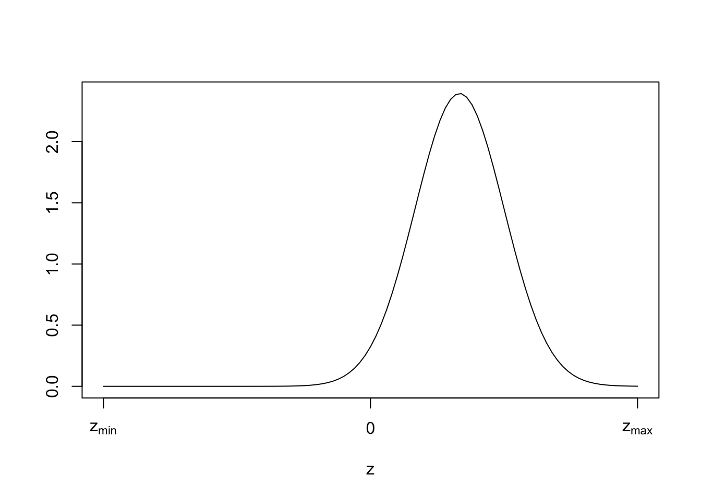

Summary of progress towards a better test procedure
analysis
statistics
Author
Ray Pomponio
Published
December 20, 2025
Overview
Concerns about anonymity in experimental design sometimes preclude the pairing of observations within a pre-versus-post intervention study. Such schemes result in paired data with unknown pairings, an issue for practitioners who wish to test for the difference between pre- and post-intervention means, commonly accomplished with the paired t-test. Reliance on a lower-bound estimate of the sample correlation, such as zero, is sensible when pairings are entirely unknown and positive correlation is suspected; this assumption yields the classic two-sample t-test. However, when limited information is available through partially-known pairings, one can improve statistical power by relaxing the assumption of independence. I demonstrate substantial improvement in power attained through an estimate of the sample correlation using partial information, and provide rationale that a test constructed from this estimate would not yield greater-than-nominal type I error probability.
1 Exposition of the Unknown Pairings Problem
We let \((x_i, y_i)\) be a single sample from a bivariate normal distribution. Our random sample consists of independent and identically distributed samples \((x_1,y_1),...,(x_n,y_n)\).
For an approach to non-normally distributed data, see Montgomery et al. (2019).
\[
(x_i, y_i) \sim \text{Normal}(\mu, \Sigma)
\] where \(\mu=\pmatrix{\mu_x \\ \mu_y}\) and \(\Sigma=\pmatrix{\sigma_x^2 & \rho\sigma_x\sigma_y \\ \rho\sigma_x\sigma_y & \sigma_y^2}\).
We are often interested in comparing population means \(\mu_x, \mu_y\) using inferential methods; one such approach is the paired t-test, which employs the following test statistic:
\[
t_p=\sqrt{n}\frac{\bar{x}-\bar{y}}{\sqrt{s_x^2+s_y^2-2rs_xs_y}}
\] where \(\bar{x},\bar{y}\) are sample means, \(s_x,s_y\) are sample standard deviations, and \(r\) is the sample correlation of \(x, y\).
Formally, under the null hypothesis \(H_0:\delta=\mu_x-\mu_y=0\), \(t_p\) is t-distributed with \(\nu_p=n-1\) degrees of freedom.
As pointed out in Grabchak (2023) and Bedeian and Feild (2002), we cannot compute \(r\) when individual samples are scrambled, such that we do not know the pairings of elements in \(x, y\). This is plainly seen from the formula for \(r\), which includes the sum of cross-product terms, \(\sum x_iy_i\). The issue of unknown pairings does not preclude the computation of any other parameter in the formula for \(t_p\), namely, \(\bar{x},\bar{y}, s_x,s_y\).
We let \(r'\) denote some plug-in estimate or approximation of \(r\), which is not directly observable. Briefly, practitioners may possess domain knowledge about the likely value of \(r\), in which case they proceed with the paired t-test using the plug-in value. Otherwise, an ‘estimate’ may be possible under conditions we explore below.
I posit the following theorem about \(r'\):
\[
\text{if}\quad r'\rightarrow r,\quad \text{then}\quad t_p' \rightarrow t_p
\] where \(t_p'\) is a modified test statistic using the directly observed parameters \(\bar{x},\bar{y}, s_x,s_y\) and the substitute parameter \(r'\).
2 Shortcomings of Grabchak’s Procedure
The solution put forth in Grabchak (2023) entails a lower-bound estimate for \(r'\). This can either be data-driven, which results in a negative lower-bound near \(-1\), or simply \(0\), if one assumes data are non-negatively correlated.
Briefly, the minimum possible correlation given a random sample is:
\[
r_s=\frac{\sum_{i=1}^nx_{(i)}y_{(n+1-i)}-n\bar{x}\bar{y}}{(n-1)s_xs_y}
\] where \(x_{(i)},y_{(i)}\) are the \(i^{th}\) sample order statistics.
Note, \(r_s\) was previously introduced in Bedeian and Feild (2002).
Alternatively, if one is willing to assume strictly non-negative sample correlations, as is plausible in most pre-versus-post intervention studies, then the use of \(r'=0\) is a sensible lower-bound and will avoid inflation of the test’s type I error rate. This is true so long as the assumption of non-negative correlation is valid; this assumption is fundamentally untestable.
In either case, we have an estimate of \(r'\), and we can compute a bounded test statistic as follows:
I demonstrate in the following simulation that the use of \(r'=0\) will result in a test procedure that is underpowered compared to that of \(t_p\). Here, I simulate bivariate normal datasets of size \(n=20\), with a population correlation of \(\rho=0.2\), and a standardized population difference in means of \(\delta=0.5\). I examine the power of the proposed test based on \(t_p'\) relative to that of the paired t-test, \(t_p\).
I don’t delve into the choice of degrees of freedom of the proposed test procedure here, for brevity’s sake, but it is discussed in Grabchak (2023).
ALPHA <-0.05n <-20rho <-0.2delta <-0.5sim.pwr <-replicate(1000, { sim <-mvrnorm(n, mu=c(0, delta), Sigma=matrix(c(1, rho, rho, 1), nrow=2)) x <- sim[, 1] y <- sim[, 2] t.p <-t.test(x, y, paired=TRUE, var.equal=TRUE) t.ind <-t.test(x, y, paired=FALSE, var.equal=TRUE) reject <-c("paired"=t.p$p.value < ALPHA, "proposed"=t.ind$p.value < ALPHA) reject})printL("Power relative to paired t-test"=mean(sim.pwr["proposed",]) /mean(sim.pwr["paired",]), dec=3)
Power relative to paired t-test: 0.844
The results demonstrate that a test based on \(t_p'\) where \(r'=0\) is underpowered compared to that of \(t_p\), the traditional paired t-test. We note that a test based on \(r'=r_s\) will exhibit even lower power, because \(r_s<0\). Thus we do not illustrate a comparison here, as \(r'=0\) gives us the more-powerful version of Grabchak’s test procedure.
3 Modification for Partially-known Pairings
I now relax the constraints of the problem of unknown pairings to include partially-known pairings for a subset, \(m\), of samples, where \(m\leq n\). Let us compute a new estimate of \(r'\) using information available from the known pairings, \(i=1, ..., m\):
\[
r'=\frac{\sum_{i=1}^mx_iy_i-n\bar{x}\bar{y}}{(n-1)s_xs_y}
\] where \(\bar{x},\bar{y}, s_x,s_y\) are computed using all samples \(i=1, ..., n\).
The rationale of \(r'\) is that it approaches \(r\) as \(m\rightarrow n\). As the number of known pairings increases, we get closer to approximating \(r\) as it would be estimated under fully-known pairings.
We hope that reliance on \(r'\) will not induce greater-than-nominal type I error. This can be checked in the following simulation code.
The results demonstrate that a test based on partially-known pairings to inform \(r'\) does not exhibit higher-than-nominal type I error.
I proceed with a simulation to assess the power of the proposed test procedure.
4 Simulation of Proposed Procedure
I simulate the performance of the proposed test procedure under the following conditions:
Simulation Parameter
Possible Values
\(\rho\)
0, 0.2, 0.5, 0.9
\(n,m\)
(20, 10), (30, 10), (10, 5), (30, 20)
\(\delta\)
0.25, 0.5
For each set of conditions, we replicate 1,000 datasets and apply the paired t-test, the proposed test procedure based on partially-known pairings, and Grabchak’s procedure for fully-unknown pairings.
Next I analyze the results of the simulation to assess the performance of the three tests.
The results demonstrate several desirable aspects of the proposed t-test with partially-known pairings (blue). Compared to Grabchak’s test (green), the proposed test exhibits greater power at all sample sizes, and the relative gain in power can be substantial with higher values of correlation, or larger sample sizes. Compared to the paired t-test (red), which is unattainable given the construct of the problem, the proposed test exhibits only a modest loss in power, except at higher values of correlation.
Figure 1: Power comparison among methods for paired difference testing
The superior performance of the proposed test over that of Grabchak is apparent in Figure 1. Additionally, Grabchak’s test tends to suffer in performance via reduced power when correlations increase. In contrast, our proposed test at least maintains power with higher values of correlation. The loss in power compared to the paired t-test is expected, because pairings are partially unknown, and also exacerbated as \(\rho\rightarrow 1\). This phenomenon can be explained by the limited information available when a subset of pairings are known; in such cases, the subset tends to yield a correlation estimate \(r'\) that is less extreme than \(r\).
5 Summary and Next Steps
I have shown that an estimate of \(r\) using partially-known pairings can improve statistical power beyond an assumption of independence (i.e., \(r=0\)), when testing for paired differences in bivariate normally-distributed data. We also demonstrated the appropriate type I error control of the proposed test procedure.
Next, I consider alternatives to \(r'\). For example, one may be interested in a ‘shrunken’ estimate of \(r\) conditional on a prior distribution and partially-known pairings. In the case of a noninformative prior, such an estimator would be unlikely to yield much value beyond our proposed \(r'\). However, if one is willing to specify an informative prior, representing beliefs about the plausible values of correlation in the sample, then a shrunken estimator may lead to improved power when testing for paired differences.
Going Further
In the above estimate of \(r'\), the cross-product \(\sum_{i=1}^mx_iy_i\) is an approximation to \(\sum_{i=1}^nx_iy_i\). Recall we cannot compute the latter summation due to partially unknown pairings. We can, however, derive boundaries for the term via order statistics:
Let us then suppose a prior on the value of \(z=\sum_{i=1}^nx_iy_i\). We begin with the following noninformative prior:
\[
p(z)\propto \textbf{1}_{z\in (z_{min}, z_{max})}
\] where \(z_{min}=\sum x_{(i)}y_{(n+1-i)}\) and \(z_{max}=\sum x_{(i)}y_{(i)}\).
We recognize that this noninformative prior places equal chance on every possible value of \(z\), including negative values. If we adopt a vague-but-informative prior, we can formally represent the expectation that \(z\) tends to be positive and non-extreme. For example:
\[
p(z) \sim \text{Normal}(\frac{1}{3}z_{max}, (\frac{z_{max}}{6})^2)
\] Such a prior would place most of its probability mass between zero and sub-maximal \(z\) values. I defer several critical details to later discussion; namely, whether this prior is appropriate for most datasets, and whether it is bounded or unbounded, as the normal distribution is unbounded.
Below, I illustrate the shape of our hypothetical vague prior on \(z\):

Figure 2: Hypothetical prior on unknown summation term
The procedure I outlined would compute a shrunken estimate, \(r''\), incorporating the prior and the data which contain partially-known pairings. Note, when the approximation to \(z\) is less than the expected value of \(p(z)\), the updated estimate will be shrunken towards the mean; this is by design. It is essentially a technique to regularize extreme values of \(\sum_{i=1}^mx_iy_i\) when \(m\) is small.
References
Bedeian, Arthur G, and Hubert S Feild. 2002. “Assessing Group Change Under Conditions of Anonymity and Overlapping Samples.”Nursing Research 51 (1): 63–65. https://pubmed.ncbi.nlm.nih.gov/11822571/.
Grabchak, Michael. 2023. “How Do We Perform a Paired t-Test When We Don’t Know How to Pair?”The American Statistician 77 (2): 127–33. https://doi.org/10.1080/00031305.2022.2115552.
Montgomery, R. N., A. S. Watts, N. C. Burns, E. D. Vidoni, and J. D. Mahnken. 2019. “Evaluating Paired Categorical Data When the Pairing Is Lost.”Journal of Applied Statistics 46 (2): 351–63. https://doi.org/10.1080/02664763.2018.1485013.